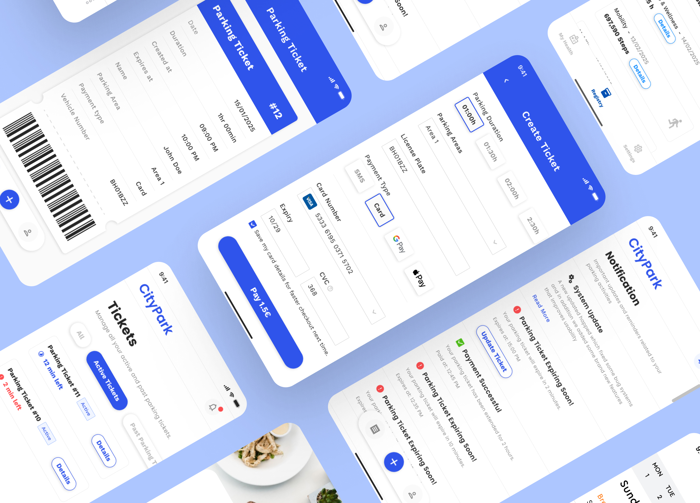
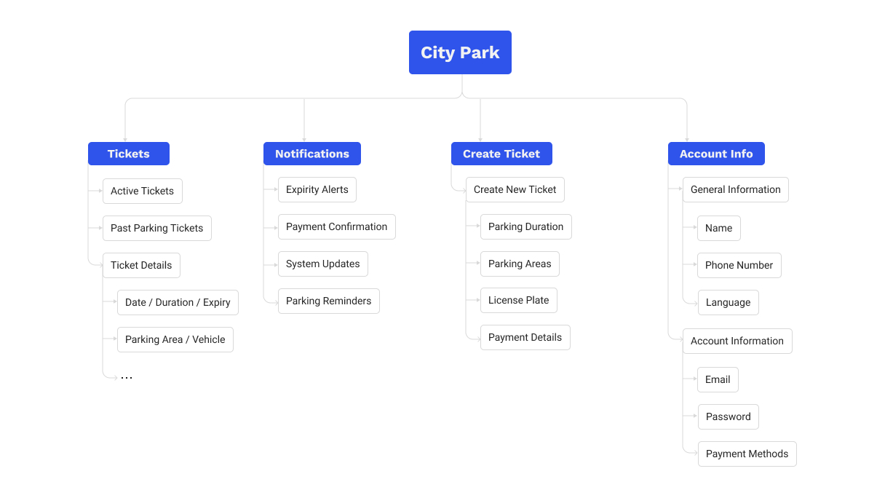
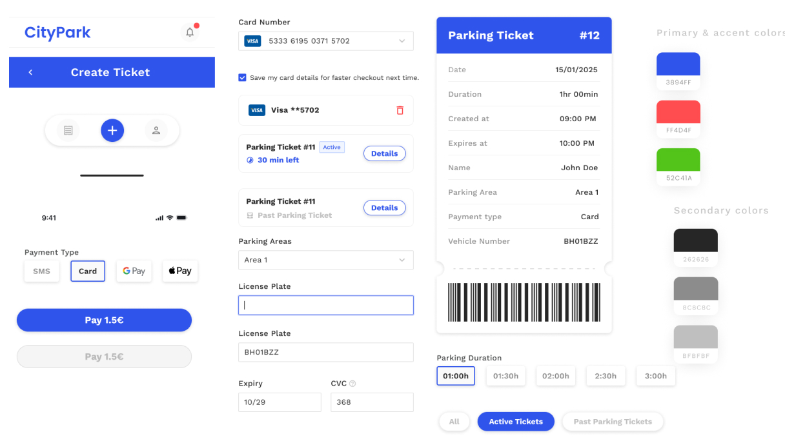

Screen Mockups: Visual Design Details
Explore the detailed design of key screens that make CityPark an intuitive, stress-free parking companion — from creating tickets in seconds to receiving smart expiry alerts and managing payments with one tap.


The Smart Parking Solution for Urban Drivers.

Users faced a fragmented and stressful parking experience: unclear ticket durations, missed expiration alerts, complicated payment flows, and clunky interfaces that made managing parking feel like a chore. Existing solutions lacked real-time updates, intuitive navigation, and proactive communication—leading to fines, frustration, and app abandonment.
As the lead UI/UX designer, I led user research, defined core user flows, designed low- and high-fidelity prototypes, and delivered pixel-perfect interfaces. I worked closely with product managers and developers to ensure seamless implementation while keeping the user’s needs at the center of every decision.
To ensure CityPark meets real user needs, I conducted qualitative research with 10 participants — including daily commuters, occasional city visitors, and frequent parkers in urban areas. The goal was to understand how people currently manage parking, what pain points they experience, and what they expect from a modern digital parking solution.
I used semi-structured interviews to uncover behaviors, frustrations, and motivations around parking payments, ticket management, and notifications. Key questions included:
Users often forget to extend or renew tickets due to lack of timely reminders or unclear expiration times — leading to fines and stress.
Many rely on memory or physical notes to track parking duration, resulting in inconsistent tracking and missed deadlines.
There’s a strong desire for simplicity and instant visual feedback — users want to see at a glance how much time is left, where they parked, and how to extend quickly.
Users want proactive alerts and easy payment options — especially one-tap extensions or saved cards — to avoid last-minute panic and penalties.
The app is structured around four core pillars of well-being: physical activity, sleep, medical symptoms, and a personal health journal. This architecture enables users to quickly access relevant data and visualize connections between different aspects of their health.

Built a reusable component library with WCAG-compliant colors and key elements like ticket cards, timers, and payment buttons — ensuring consistency and speed across all CityPark screens.

Conducted user interviews with urban drivers to uncover pain points around forgotten timers and complex payments, shaping CityPark’s focus on simplicity, real-time alerts, and frictionless ticket management.
Designed low-fidelity wireframes centered on one-tap actions — selecting duration, area, and payment — ensuring users can start or extend parking in under 3 taps with clear visual hierarchy.
Built high-fidelity prototypes in Figma and tested core flows — including ticket creation, live countdowns, expiry alerts, and saved payment access — with real users to validate usability and refine interactions.
Ran usability tests to confirm intuitive navigation and quick task completion, iterating based on feedback to ensure CityPark feels effortless, trustworthy, and stress-free for daily parkers.
The redesign introduced several innovative features that significantly improved user engagement and satisfaction.
Users can create, view, and extend tickets in under 3 taps. Live countdowns and one-click extensions prevent missed expirations — turning stress into control.
Real-time push notifications warn users 10 minutes before ticket expiry, with an "Extend" button built-in — reducing fines by up to 70% in early testing.
Integrated support for Visa, Mastercard, Apple Pay, and Google Pay — with optional card saving — so users never re-enter details, even when parking in a hurry.
Explore the detailed design of key screens that make CityPark an intuitive, stress-free parking companion — from creating tickets in seconds to receiving smart expiry alerts and managing payments with one tap.
Since launch, CityPark has transformed how users manage urban parking. Drivers report feeling more in control, less stressed, and more confident about avoiding fines. The app’s simplicity — from creating a ticket to receiving timely alerts — has led to high engagement and strong word-of-mouth adoption.
Daily Active Users
87%
Ticket Extension Rate
3.5x
User Satisfaction
4.1/5